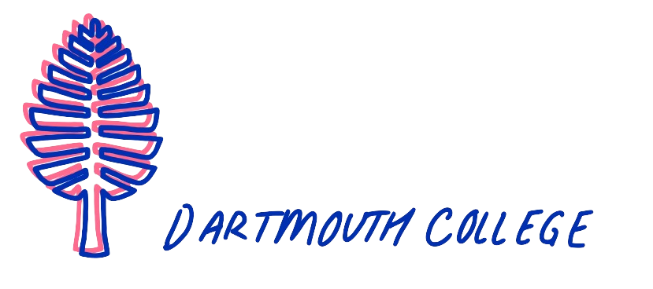
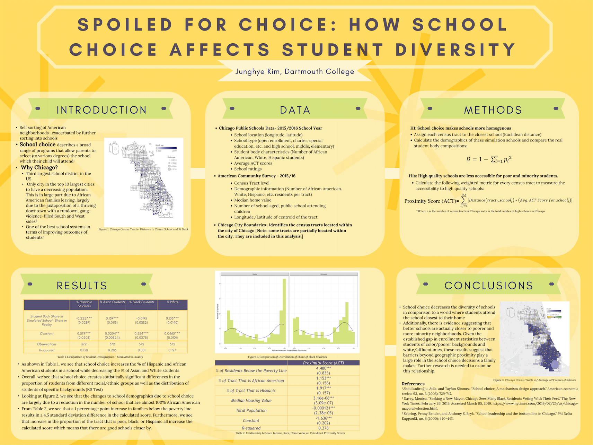
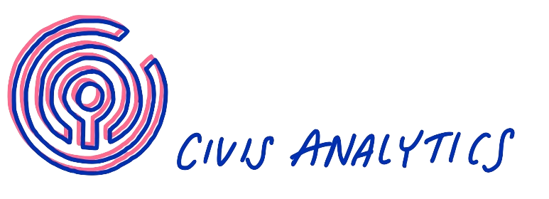
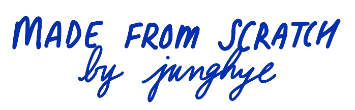

I’m currently a Senior Audience Analyst at the New York Times.
I graduated from Dartmouth in 2019 with a degree in Quantitative Social
Science which basically just means I spent four years trying to understand
what makes humans do what they do.
I’m a big Jomboy media fan and
think this is such an exciting moment for the company. I enjoy creative,
fast paced environments, and think that I could be an asset to y’alls team.
I really believe in what you all are doing and would love to be a part of it.

The way I see it, one of the primary goals is to build a
product that becomes an integrated part of peoples’ lives. These are just
some initial ideas I had for you all to get there. It’s an abbreviated
list so would be happy to expand on any points!
One goal should be to add multiple entry points in order to capture a
broader range of fans. To achieve this, potential options include:
- Build more ~ intimate ~ interactions for audience members to build deeper
engagement
- Thoughtfully diversify the content portfolio. One lane would be to build out
more everlasting content that’s not tied to a specific moment in time.
- Invest more heavily in the website. The current business model is dependent
on other platforms and the whims of their algorithms (algorithwhims). This
would diversify the channels that your users engage with you through in a critical way.
Data isn’t everything, but it sure as heck can be useful. As we’ve seen with the
Yankees, if you forget that your data driven decisions impact people you’ve already
lost.
- Invest in good data people who understand this balance and can help you navigate
the noisy data environment that comes from operating on so many different platforms.
- Don’t expect data to be a crystal ball. It should be combined with editorial and
creative discretion in order to make the smartest decisions possible.

Relevant Coursework: Multivariate Analysis, Econometrics,
Multivariable Calculus, Statistics, Computational Text Analysis, Programming
& Computation, Linear Algebra, Political Survey Research, Data Visualization
Thesis: Spoiled For Choice: How School Choice Affects Student Diversity

Working Paper: Context and Credibility on Social Media: Platform and News
Feed Spillover Effects on Perceived Information Credibility and Engagement
Behavior
Beyond the classroom, I have conducted research in both the government and
economics departments studying topics such as electoral engagement in college
students to African migration patterns. I also spent over 3 years as a Learning
Fellow for Dartmouth’s Intro Calculus course. During this time, I worked with
students in and out of the classroom to help them with course material and
participated in weekly meetings to help professors identify what the students
were struggling with. This experience has been integral in my work as a data
analyst as it taught me how to effectively communicate complex, quantitative
concepts to a range of audiences as well as the importance of tailoring your
explanation to meet the audience where they are with their expertise.
At The Times, I work on the Audience team to analyze readership
data and identify opportunities for growth and expansion. Our team works
closely with the newsroom staff to combine data insights with editorial
judgment to provide SEO, social, and additional strategic guidance for the
publication. I specialize in our multimedia data which includes collaborating
with our Video, Audio, and Graphics desks to help strategize future growth based on
analyses. This role has further developed my abilities to communicate with
both technical and non technical stakeholders, and has taught me how to
build collaborative data relationships with various teams.

During my time at Civis, I worked as an Applied Data Scientist
to craft analyses and insights for a variety of technical and non technical
clients. I architected a scalable, automated reporting pipeline to ingest
and munge large, complex datasets, produce data integrity reports, and
output deliverables. I headed development and execution of this pipeline
for all Senate, House, Gubernatorial, and State Leg races, as well as
reporting for early voting, resource allocation, message testing, and
ad reach. I also spearheaded data visualization development with an emphasis
on visual storytelling to communicate actionable insights to non technical
and technical stakeholders. This job was high stakes and fast paced and
taught me an incredible amount about building impactful analyses that
translate into insights clients can understand and act on, which has
continued to be priority number one in my work.


